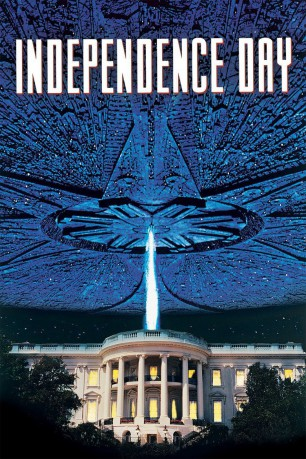

#485 Independence Day
Auszeichnungen: 1 Oscars gewonnen für 1 Oscars nominiert
 gesehen am 16.10.2016
gesehen am 16.10.2016
 
 IMDB-Wertung: 7.0 / 10
IMDB-Wertung: 7.0 / 10  Metascore: 59
Metascore: 59 
Eine gewaltige außerirdische Armee bedroht die Existenz der Erde. Die Invasion beginnt mit dem Auftauchen gigantischer Raumschiffe, die sich über den wichtigsten Zentren der Welt positionieren. Die bedrohliche Faszination schlägt schnell in unvorstellbare Panik um, als die Raumschiffe angreifen und bedingungslos zerstören. Nun liegt das Schicksal der Menschheit in den Händen der wenigen Überlebenden, die sich für den alles entscheidenden Kampf gegen die Invasoren bereit machen…
Jahr: 1996
Dauer: 145 Minuten
FSK: 12
Land: USA Studio: 20th Century FoxTonspuren: DTS - ,
Untertitel: Deutsch,
Auflösung: 1080p (1920x816) Größe: 8437 MB
Genre: Action, Abenteuer, Sci-Fi
Regisseur:  Roland Emmerich
Roland Emmerich
Drehbuch: Dean Devlin, Roland Emmerich
Soundtrack: David Arnold
Darsteller:
Datei: X:\2-Dilogie(G-M)\Independence Day\Independence Day (1996, FSK12, 1920x816).mkv seit 02.03.2015
Festplatte: HD Collection-2(A-Z)-3(A-M)
 Alle Filme aus Gruppe '2-Dilogie(G-M)\Independence Day'
Alle Filme aus Gruppe '2-Dilogie(G-M)\Independence Day'